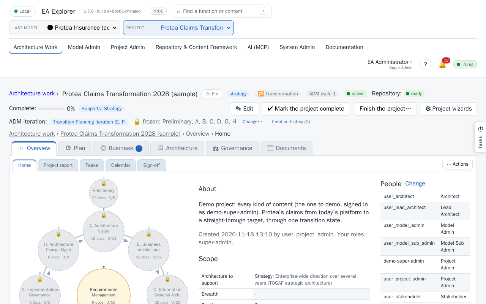

Back up a project
For: Project Admin
A project with its documents, models and library, as one file to keep or restore.

#/projects/{p}/homeWhy do this
A project backup holds everything of one project: its set-up, documents, decisions and sign-offs. It is the way to keep a copy before a big change, or to move a project to another installation. See Backups, restores and disaster recovery.
Recovery is planned before it is needed: what to protect, how often, how to check it, and how far back each kind of restore reaches. EA Explorer takes a backup of now before any restore, so a restore can itself be undone.
In TOGAF terms: Outside the method: this protects the Architecture Repository itself, the record every ADM phase relies on. See EA Explorer and the TOGAF Standard.
The goal: A project is kept as one file you can restore anywhere.
Before you start You need the Project Admin or Lead Architect role on the project.
Steps
- Open the project, its About tab, Back up and restore.
- Back up: the file is kept with the project; download it, or Put on git.